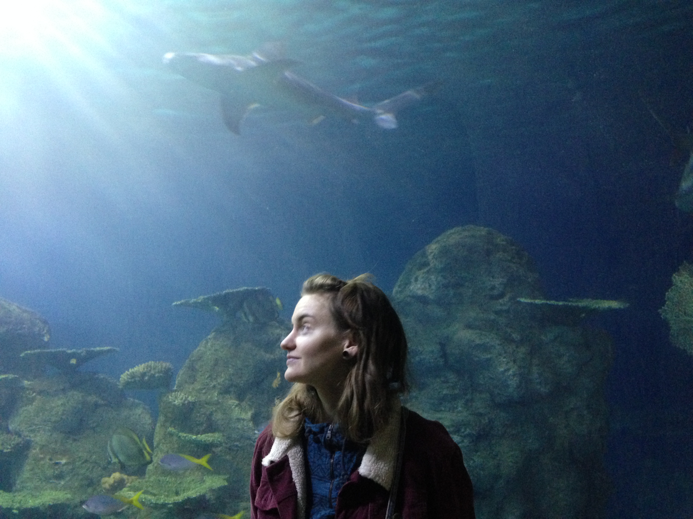

I grew up in a small town outside of Dallas, Texas. I moved to Salt Lake City in 2004 to attend the University of Utah and I graduated with a BFA in acting and business. I now work for Broadway Across America where I do ticketing and sales for touring shows at the Eccles Theatre downtown. With my work I really enjoy seeing all the shows, I recently saw Hamilton this past spring and I was thourghly inspired. My catharsis was such a motivator for me. I realized that an inate part of me is to always be gaining new knowledge and build projects with others. Here is a quote from one of my favorite songs "There's a million things I haven't done. Just you wait, just you wait."
I live in a big old house up on the hill in the avenues of Salt Lake. I live with my best friends and four cats. I'm pretty sure the cats think its their house and we are lucky to grace their presence, but seriously each cat has their unqiue personality. Yup I'm a cat lady, I love dogs too or just about any fur baby. I have a lot of hobbies: snowboarding, biking and building bikes, leather crafting, motorcycling, hiking, camping, gardening, top-rope climbing, cooking, reading, music, concerts, dancing, astrology, yoga/ayurveda, game and art nights (with the roomies). One project that I recenlty started that I have enjoyed this hot summer is brewing kombucha. I have worked in craft breweries and I would love to brew cider and mead (next summer project).